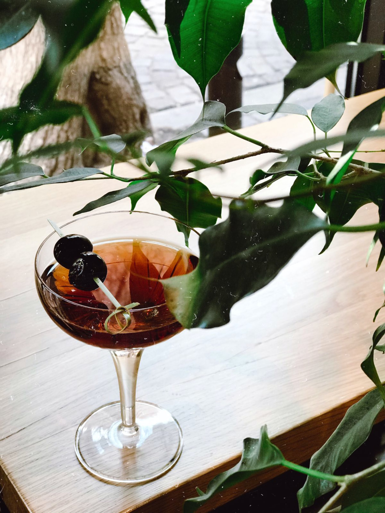

Recommended Drink: Manhattan

Cloudy days like today remind me of New York City.
Ingredients
- 2 ounces bournbon or rye
- 1 ounce sweet vermouth
- 2 dashes Angostura bitters
- 1 dash orange bitters
- Garnish: brandied cherry
Steps
- Add all the ingredients into a mixing glass with ice, and stir until well-chilled.
- Strain into a chilled coupe.
- Garnish with a brandied cherry.